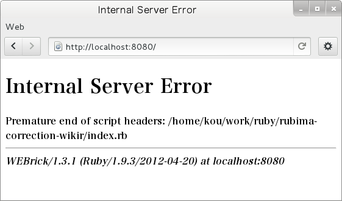

Ruby コードの感想戦 【第 1 回】 WikiR
書いた人: 須藤 功平 (@kou)
Ruby コードの感想戦 【第 1 回】 WikiR
感想戦（かんそうせん）とは、囲碁、将棋、チェス、麻雀などのゲームにおいて、対局後に開始から終局まで、またはその一部を再現し、
対局中の着手の善悪や、その局面における最善手などを検討することである。 (Wikipedia 「感想戦」より)るびまには「よい Ruby コードのお手本を示す」というスタイルの青木峰郎さんの「あなたの Ruby コードを添削します」という名連載がありました。
新しく始まるこの連載もコード添削をテーマにした連載です。青木さんの連載との違いは、「よい Ruby コードのお手本を示す」、「Ruby で書くよいコードのベストプラクティスを提供する」というのではなく、「よいコードにも視点の違いによって多様性があり、それぞれの視点を読んだうえで記事を読む人に自分はどう考えるかを考えてもらう」というスタイルをとる点です。結果として、読んだ人が自分のコードを書くときに、視点がひとつ、ふたつ増えているということを期待しています。
この連載では、「ある人がコードにコメントし、そのコメントに対してまた別の人がコメントする」という記事がセットで進んでいきます。コメントする人は特定の誰かではなく、毎回変わっていきます。先生と生徒の関係ではなく、コメントする人、される人、どちらもコードに一家言持ったプログラマです。きっと、いろいろな視点を見つけられるはずです。
第 1 回目は咳さんの書いたコードに対して私（須藤）がコメントします。題材は以下の URL にある小さな Wiki です。
http://d.hatena.ne.jp/m_seki/20120213#1329064281
私が咳さんのコードに最初に触れたのはたぶん RWiki です。RWiki は咳さんが書いた Wiki です。私も RWiki をいじっていた時期がありましたが、それは咳さんがほとんどいじらなくなってからです。私が咳さんのコードをいじるのは 5 年以上ぶりです。
まず、動かす
単に他の人のコードにコメントするだけであれば、コードを読んで気になるところにコメントするだけでもよいのですが、自分がちゃんと関わる気のあるコードならまずは動かしましょう。今回はちゃんと関わる気はないのですが、ちゃんと読む気はあるので動かします。
WikiR は dRuby サーバーと dRuby サーバーに接続する CGI で構成されています。これは、咳プロダクツではよくあるパターンです。咳フリークならみんな知っています。
まずは dRuby サーバーを動かします。
% ruby wikir.rb次に CGI を動かします。CGI を動かすためには HTTP サーバーが必要なので、まずは HTTP サーバーを作りましょう。
httpd.rb:
#!/usr/bin/env ruby
require "webrick"
require "webrick/httpservlet/cgihandler"
server = WEBrick::HTTPServer.new(:Port => 8080)
cgi_script = File.expand_path("index.rb", File.dirname(__FILE__))
server.mount("/", WEBrick::HTTPServlet::CGIHandler, cgi_script)
trap(:INT) do
server.shutdown
end
server.startHTTP サーバーを動かします。
% ruby httpd.rb
[2012-10-09 21:57:22] INFO WEBrick 1.3.1
[2012-10-09 21:57:22] INFO ruby 1.9.3 (2012-04-20) [x86_64-linux]
[2012-10-09 21:57:22] INFO WEBrick::HTTPServer#start: pid=14901 port=8080localhost の 8080 番ポートで HTTP サーバーが起動しました。それでは、Web ブラウザーでアクセスしましょう。 
CGI の実行に失敗しました。うまくいかないときはまずはログを確認します1。HTTP サーバーのログを確認すると以下のようになっています。
[2012-10-09 22:01:25] ERROR CGIHandler: /home/kou/work/ruby/rubima-correction-wikir/index.rb:
/usr/lib/ruby/1.9.1/webrick/httpservlet/cgi_runner.rb:46:in `exec': No such file or directory - /home/kou/work/ruby/rubima-correction-wikir/index.rb (Errno::ENOENT)
from /usr/lib/ruby/1.9.1/webrick/httpservlet/cgi_runner.rb:46:in `<main>'
[2012-10-09 22:01:25] ERROR CGIHandler: /home/kou/work/ruby/rubima-correction-wikir/index.rb exit with 1
[2012-10-09 22:01:25] ERROR Premature end of script headers: /home/kou/work/ruby/rubima-correction-wikir/index.rb
localhost - - [09/Oct/2012:22:01:25 JST] "GET / HTTP/1.1" 500 365
- -> /ファイルが存在しているのにファイルの実行時に「No such file or directory」とでるときは shebang2 がおかしいと相場が決まっています。index.rb を見てみましょう。
index.rb:
#!/usr/local/bin/ruby
require 'drb/drb'
DRb.start_service('druby://localhost:0')
ro = DRbObject.new_with_uri('druby://localhost:50830')
ro.start(ENV.to_hash, $stdin, $stdout)私の環境では ruby コマンドは /usr/bin/ruby なので /usr/local/bin/ruby から /usr/bin/ruby に変更します 3。
commit f9fdacafc7dbe57a537f09a013193f6fe257b454 (HEAD, master)
Author: Kouhei Sutou <kou@clear-code.com>
Date: Tue Oct 9 22:06:59 2012 +0900
Adjust shebang
Ruby command exists at /usr/bin/ruby instead of /usr/local/bin/ruby on
Debian GNU/Linux.
---
index.rb | 2 +-
1 file changed, 1 insertion(+), 1 deletion(-)
diff --git a/index.rb b/index.rb
index 22d10cd..1b146a6 100755
--- a/index.rb
+++ b/index.rb
@@ -1,4 +1,4 @@
-#!/usr/local/bin/ruby
+#!/usr/bin/ruby
require 'drb/drb'
DRb.start_service('druby://localhost:0')ふたたび Web ブラウザーでアクセスすると今度はトップページが表示されます。

これでスタート地点に立てました。それでは、コードを見ていきましょう。
コードを見る
私がコードを読むときは 2 つのモードがあります。1 つが「なんとなく読む」モードで、もう 1 つが「必要だから読む」モードです。「なんとなく読む」モードのときは上から順に読んでいって、なにか気になったらコメントしたり直したり無視したりします。読むというより眺めるに近いかもしれません4。「必要だから読む」モードのときは、まず必要なところを探して、見つけたらそこだけを集中して読んで他のところには目もくれずに必要なことだけ調べます。
「なんとなく読む」モードはコミットメール5を読む時のモードです。「必要だから読む」モードは機能を追加する時やデバッグする時や実装を調べる時のモードです。
今回は機能追加などではなく、気になったことにコメントするために読むので「なんとなく読む」モードです。
WikiR は index.rb と wikir.rb の 2 つのファイルで構成されています。まずは、本体である wikir.rb の方から見ていきましょう。
wikir.rb
マジックコメント
はじめにファイル内で使うエンコーディングを指定するコメントがあります。
wikir.rb:
1 # -*- coding: utf-8 -*-これはマジックコメントと呼ばれています。マジックコメントには以下のようにいくつかの書き方があります。
# -*- coding: エンコーディング名 -*-
# -*- encoding: エンコーディング名 -*-
# coding: エンコーディング名
# coding = エンコーディング名
# encoding: エンコーディング名
# encoding = エンコーディング名
# ...たくさんあるとどの書き方がよいか悩むかもしれませんが、wikir.rb と同じく以下の書き方にしましょう6。
# -*- coding: エンコーディング名 -*-この形式は Ruby だけではなく GNU Emacs も認識できる形式です。GNU Emacs がエンコーディングを認識すると、保存するときに指定したエンコーディングに変換してくれます。そのため、マジックコメントで指定したエンコーディングと実際のエンコーディングが異なることがありません。なお、ruby-mode7を使っていると ASCII 範囲外の文字列があれば自動でマジックコメントが挿入されるので、意識せずにマジックコメントを指定していることでしょう。
ライブラリ読み込み
次にライブラリを読み込んでいます。
wikir.rb:
2 require 'kramdown'
3 require 'webrick'
4 require 'webrick/cgi'
5 require 'drb/drb'
6 require 'erb'
7 require 'monitor'特に気になるところはありません。
WikiR::Book
いよいよクラス定義です。
wikir.rb:
9 class WikiR
10 class Book
11 include MonitorMixin
12 def initialize
13 super()
14 @page = {}
15 end
16
17 def [](name)
18 @page[name] || Page.new(name)
19 end
20
21 def []=(name, src)
22 synchronize do
23 page = self[name]
24 @page[name] = page
25 page.set_src(src)
26 end
27 end
28 endまずは WikiR::Book です。これは複数のページを管理するクラスですね。咳さんはページを管理するクラスには「本」という名前をつけます。RWiki の時もそうでした。
ページを管理するクラスには他にも違う名前が考えられます。例えば「Wiki」という名前です。ページを全部集めたものが Wiki だと考えれば適切な名前です。あるいは、「データベース」という名前です。ページが保存されている感じがします。「本」や「Wiki」ではどのように保存するかは気になりませんが、データベースという名前を使うとどのようにページを保存するかを意識している感じがしますね。
咳さんは何かに例えた名前をつけます。作っているものは Wiki ですが、「ページが集まっているものと言えば本だよね」という連想をして「本」という名前をつけたのでしょう。このように何かに例えた名前をつけると愛着がわき、例えたものベースで説明するようになります。例えば、「ページの数が増えてきて処理に時間がかかるようになったね」というのではなく、「本が厚くなって重くなったね」というような感じです。自分が書いたソフトウェアに愛着がわくので一度は試してみるとよいでしょう8。
さて、それではコードの中を見てみましょう。
wikir.rb:
11 include MonitorMixin
12 def initialize
13 super()
14 @page = {}
15 endMonitorMixin を使っています。咳さんが使っているのをよく見ます。
これはマルチスレッド対応なクラスを作る時に便利なモジュールです。このモジュールは synchronize メソッドを提供します。同時に複数のスレッドからアクセスされそうなコードを synchronize メソッドのブロック内で呼び出すことで、競合を防ぐことができます。例えば、以下のコードは Counter#up を複数のスレッドから同時に呼び出すと正しくカウントアップできません。
thread-unsafe-counter.rb:
class Counter
attr_reader :count
def initialize
@count = 0
end
def up
count = @count
sleep(0.00000001)
@count = count + 1
end
end
counter = Counter.new
threads = []
100.times do
threads << Thread.new do
100.times do
counter.up
end
end
end
threads.each(&:join)
p counter.count # => 10000にならない！これを MonitorMixin を使ってマルチスレッドでも正しくカウントアップできるようにすると以下のようになります。
thread-safe-counter-mixin.rb:
require "monitor"
class Counter
include MonitorMixin
attr_reader :count
def initialize
super()
@count = 0
end
def up
synchronize do
count = @count
sleep(0.00000001)
@count = count + 1
end
end
end
counter = Counter.new
threads = []
100.times do
threads << Thread.new do
100.times do
counter.up
end
end
end
threads.each(&:join)
p counter.count # => 10000になる！違いは以下の通りです。
% diff -u thread-unsafe-counter.rb thread-safe-counter-mixin.rb
--- thread-unsafe-counter.rb 2012-10-15 00:04:45.476261676 +0900
+++ thread-safe-counter-mixin.rb 2012-10-15 00:04:34.440532956 +0900
@@ -1,13 +1,20 @@
+require "monitor"
+
class Counter
+ include MonitorMixin
+
attr_reader :count
def initialize
+ super()
@count = 0
end
def up
- count = @count
- sleep(0.00000001)
- @count = count + 1
+ synchronize do
+ count = @count
+ sleep(0.00000001)
+ @count = count + 1
+ end
end
endMonitorMixin を include して、initialize で super() して、up の中の処理を synchronize do … end しています。これは dRuby を使ったプログラムでよく見る処理です。
と、MonitorMixin の説明をしてきましたが、私は MonitorMixin が好きではありません。initialize で super() するのがカッコ悪いなぁと思います。継承したときに initialize で super() するのは親クラスも初期化しないといけないからだろうなぁとは思います。クラスをインスタンス化するときに initialize が呼ばれるというルールがあるからです。しかし、モジュールは initialize が呼ばれるというルールはありません。それなのに super を呼ばなければいけないのがカッコ悪いなぁと思う理由な気がします。
なお、Ruby 2.0 では Module#prepend があるので、以下のようにすればクラス側で明示的に super を呼ばなくてもすみます。
module-prepend.rb:
# -*- coding: utf-8 -*-
module MonitorMixin
def initialize
p :monitor_mixin
super # これは必要。これがないと:bookが出力されない
end
end
class Book
prepend MonitorMixin
def initialize
p :book
end
end
Book.new # => :monitor_mixin
# :book話が逸れましたが、super() を呼ばなければいけないなら @monitor = Monitor.new して @monitor.synchronize とする方が好きです。こっちの方が役割が分離されていてわかりやすいからです。
thread-safe-counter-composite.rb:
require "monitor"
class Counter
attr_reader :count
def initialize
@count = 0
@monitor = Monitor.new
end
def up
@monitor.synchronize do
count = @count
sleep(0.00000001)
@count = count + 1
end
end
endということで、WikiR::Book も MonitorMixin ではなく Monitor を使うようにします。
commit 96488c8ee5e0158c3dc67bc280c76f8a60e78ae9 (HEAD, master)
Author: Kouhei Sutou <kou@clear-code.com>
Date: Mon Oct 15 00:24:45 2012 +0900
Use Monitor instead of MonitorMixin
Monitor is readable rather than MonitorMixin.
---
wikir.rb | 5 ++---
1 file changed, 2 insertions(+), 3 deletions(-)
diff --git a/wikir.rb b/wikir.rb
index 2c73014..72c5a58 100644
--- a/wikir.rb
+++ b/wikir.rb
@@ -8,9 +8,8 @@ require 'monitor'
class WikiR
class Book
- include MonitorMixin
def initialize
- super()
+ @monitor = Monitor.new
@page = {}
end
@@ -19,7 +18,7 @@ class WikiR
end
def []=(name, src)
- synchronize do
+ @monitor.synchronize do
page = self[name]
@page[name] = page
page.set_src(src)私は、以下のようなときは「こうした方がいいんじゃない？」と日本語でコメントするのではなくて、直接コミットしてコミットメッセージに「どうしてこうした方がいいと思うか」を書きます。
- 自分がコミット権を持っている
- コミットした人が他の人のコミットも見ていそう
- 自分でコミットするのが面倒くさくない
- 日本語じゃなくてもコードで伝わりそう
- 日本語でも通じなさそう
直接コミットすると、そのコミットには以下の情報が含まれます。
- どう直したかのサマリー（Use Monitor instead of MonitorMixin）
- どうしてこう直したかという理由（Monitor is readable rather than MonitorMixin.）
- どう直したか（変更点そのもの。diff）
私は、こっちのコードの方がいいんじゃないかということを伝える時には「どうしてそう思うか」という理由も伝えたいなぁと思っています。理由も伝えれば同じパターン9の別のケースの時にも使える知識になってくれるのではないかと期待しているからです。そして、上述のようにコミットすることにより私が伝えたい内容を全部含んだ状態で伝えられるのではないかと思っています。ただ、これが本当に効果がある方法なのかどうかはまだわかっていません。
それでは、コードの続きを見ていきましょう。
もう忘れているかもしれませんが、initialize を見ていました。今の initialize は以下のようになっています。
wikir.rb:
11 def initialize
12 @monitor = Monitor.new
13 @page = {}
14 end次に気になるのが @page というインスタンス変数名です。このインスタンス変数は複数のページを扱っているので複数形にしましょう。複数形にすることで、このインスタンス変数には複数の値が入っていることがわかりやすくなります。
commit 8c2c555dc29c1538ffcfde0a71e30bd4b9bbc11a (HEAD, master)
Author: Kouhei Sutou <kou@clear-code.com>
Date: Mon Oct 15 21:59:00 2012 +0900
Use plural form for collection
@page ->
@pages
Plural form is suitable for collection.
---
wikir.rb | 6 +++---
1 file changed, 3 insertions(+), 3 deletions(-)
diff --git a/wikir.rb b/wikir.rb
index 72c5a58..c51e312 100644
--- a/wikir.rb
+++ b/wikir.rb
@@ -10,17 +10,17 @@ class WikiR
class Book
def initialize
@monitor = Monitor.new
- @page = {}
+ @pages = {}
end
def [](name)
- @page[name] || Page.new(name)
+ @pages[name] || Page.new(name)
end
def []=(name, src)
@monitor.synchronize do
page = self[name]
- @page[name] = page
+ @pages[name] = page
page.set_src(src)
end
end名前を変える変更をするときのコミットメッセージには、以下のようにどのように変更したかを書きます。ポイントは縦に並べてどこが変わったかをわかりやすくすることです。
@page ->
@pages以下のように書く方法もありますが、縦に並べたほうが違いがわかりやすいのでそうしています。なお、縦に並べて違いをわかりやすくするという方法はテスティングフレームワークの失敗時の出力でも使われています。test-unit なら assert_equal が失敗した時の出力、RSpec なら should == が失敗した時の出力を確認しなおしてみてください。
@page -> @pages
Rename @page to @pages.WikiR::Book にはもうひとつ気になるところがありますが、それは後で触れることにします。次のクラスへ進みましょう。
WikiR::Page
次のクラスは WikiR::Page です。WikiR::Page も小さなクラスです。咳さんのコードに出てくるクラスは小さいことが多いです。
wikir.rb:
29 class Page
30 def initialize(name)
31 @name = name
32 set_src("# #{name}\n\nan empty page. edit me.")
33 end
34 attr_reader :name, :src, :html, :warnings
35
36 def set_src(text)
37 @src = text
38 km = Kramdown::Document.new(text)
39 @html = km.to_html
40 @warnings = km.warnings
41 end
42 endRWiki の時もそうでしたが、咳さんは set_src という名前を使います。src= の方が Ruby らしいのに、です。たぶん、「src= だと単純に値を設定するだけ」というイメージがあるけど、実際は「ソースを設定した後に HTML に変換するというようにたくさんやっている」から set_src という別の名前にしているんじゃないかと思います。で、私はこの名前が好きではありません。
src= でいいんじゃないかと思います。もし、HTML に変換するコストが大きいと感じるようであれば、本当に HTML が必要になるまで HTML への変換処理を遅延すればよいでしょう。例えば以下のようにです。ただ、このプログラムではそこまでする必要はないと思っています。
def src=(text)
@dirty = true
@src = text
end
def html
parse if @dirty
@html
end
def warnings
parse if @dirty
@warnings
end
private
def parse
km = Kramdown::Document.new(@src)
@html = km.to_html
@warnings = km.warnings
@dirty = false
end別案は set_src ではなく update_src にするというものです。そんなにピンときませんが、src= よりはたくさんのことをしそうな気がします。
ここでは、src= にします。理由は src= の方が Ruby らしい名前だからです。Ruby らしくない名前（set_src とか camelCase のメソッド名とか）を使うと、Rubyist が読んだ時にモヤっとします。
commit 727e6c6fa3c862d0e6e87a76d1d6435d06a70cc1 (HEAD, master)
Author: Kouhei Sutou <kou@clear-code.com>
Date: Mon Oct 15 23:22:04 2012 +0900
Use Rubyish name
set_src ->
src=
Non-Rubyish name confuses Rubyists.
---
wikir.rb | 6 +++---
1 file changed, 3 insertions(+), 3 deletions(-)
diff --git a/wikir.rb b/wikir.rb
index c51e312..e63f9d6 100644
--- a/wikir.rb
+++ b/wikir.rb
@@ -21,7 +21,7 @@ class WikiR
@monitor.synchronize do
page = self[name]
@pages[name] = page
- page.set_src(src)
+ page.src = src
end
end
end
@@ -29,11 +29,11 @@ class WikiR
class Page
def initialize(name)
@name = name
- set_src("# #{name}\n\nan empty page. edit me.")
+ self.src = "# #{name}\n\nan empty page. edit me."
end
attr_reader :name, :src, :html, :warnings
- def set_src(text)
+ def src=(text)
@src = text
km = Kramdown::Document.new(text)
@html = km.to_htmlなお、diff にもある通り、WikiR::Book で後回しにした気になることはこのメソッドの名前のことでした。
次に気になることは src= の中です。
wikir.rb:
36 def src=(text)
37 @src = text
38 km = Kramdown::Document.new(text)
39 @html = km.to_html
40 @warnings = km.warnings
41 endkm という変数名が気になります。これは KraMdown の略だと思いますが、このオブジェクトは Kramdown::Document オブジェクトなので km ではなく document が適切です。
commit 66359d8fa18df2e3ea64d8a7f47e79a710dfa126 (HEAD, master)
Author: Kouhei Sutou <kou@clear-code.com>
Date: Mon Oct 15 23:29:07 2012 +0900
Use meaningful name
km ->
document
Non-meaningful name is not readable.
---
wikir.rb | 6 +++---
1 file changed, 3 insertions(+), 3 deletions(-)
diff --git a/wikir.rb b/wikir.rb
index e63f9d6..2bcc096 100644
--- a/wikir.rb
+++ b/wikir.rb
@@ -35,9 +35,9 @@ class WikiR
def src=(text)
@src = text
- km = Kramdown::Document.new(text)
- @html = km.to_html
- @warnings = km.warnings
+ document = Kramdown::Document.new(text)
+ @html = document.to_html
+ @warnings = document.warnings
end
end他にも src と省略しないで source にしたいとか、attr_reader は initialize の下じゃなくて上に書きたいとか、”# #{name}…” は default_source というメソッドとして括りだしたいとかありますが省略します。
WikiR::UI
最後は WikiR::UI です。ERB が使われていて咳さんらしいコードですね。
wikir.rb:
44 class UI < WEBrick::CGI
45 include ERB::Util
46 extend ERB::DefMethod
47 def_erb_method('to_html(page)', ERB.new(<<EOS))
48 <html>
49 <head>
50 <title>Kramdown</title>
51 <script language="JavaScript">
52 function open_edit(){
53 document.getElementById('edit').style.display = "block";
54 }
55 </script>
56 </head>
57 <body>
58 <%= page.html %>
59 <a href='javascript:open_edit()'>[edit]</a>
60 <div id='edit' style='display:none;'>
61 <form method='post'>
62 <textarea name='text' rows="40" cols="50"><%=h page.src %></textarea>
63 <input type='submit' name='ok' value='ok'/>
64 </form>
65 </div>
66 </body>
67 </html>
68 EOS
69
70 def initialize(book, *args)
71 super(*args)
72 @book = book
73 end
74
75 def do_GET(req, res)
76 do_request(req, res)
77 build_page(req, res)
78 end
79 alias :do_POST :do_GET
80
81 def do_request(req, res)
82 text ,= req.query['text']
83 return if text.nil? || text.empty?
84 text = text.force_encoding('utf-8')
85 @book[req.path_info] = text
86 rescue
87 end
88
89 def build_page(req, res)
90 res['content-type'] = 'text/html; charset=utf-8'
91 res.body = to_html(@book[req.path_info])
92 end
93 endまずは、ERB 関連の部分を見ましょう。
45 include ERB::Util
46 extend ERB::DefMethod
47 def_erb_method('to_html(page)', ERB.new(<<EOS))
...
68 EOS特に改善案はないのですが、前から DefMethod というモジュール名がカッコ悪いなぁと思っていることだけ書いておきます。
なお、def_erb_method のように ERB をメソッドとして使うのは ERB way です。MVC の V は View Object（実行環境とテンプレート）なのです！ 気になる人はerbを偲んで（PDF）を確認しましょう。
ERB はこのくらいにして次に進みましょう。
wikir.rb:
81 def do_request(req, res)
82 text ,= req.query['text']
83 return if text.nil? || text.empty?
84 text = text.force_encoding('utf-8')
85 @book[req.path_info] = text
86 rescue
87 end以下の書き方は、「Ruby で Web アプリケーションを書くときは Rack ベースのものばかり10」という人には馴染みのないものでしょう。
wikir.rb:
82 text ,= req.query['text']WEBrick が提供する CGI 用ライブラリや昔の cgi.rb は、クエリーパラメーターの値を必ず配列で返します。これは、cgi.rb?key=value1;key=value2 というリクエストのときに “key” の値として [“value1”, “value2”] と配列を返すだけではなく、cgi.rb?key=value というリクエストのときも “key” の値として [“value”] と配列を返すということです。しかし、多くの場合は最初の値だけで十分です。そこで上述の書き方になります。多重代入の構文ですが、, を = にくっつけることで ,= で 1 つの代入演算子のように見せようとしているのでしょう。右辺の最初の値を左辺に代入するという書き方です。昔は見た書き方ですが、最近は見ることが少なくなった書き方です。
昔話でした。
それでは、最近の書き方をしているところも見てみましょう。
84 text = text.force_encoding('utf-8')force_encoding は ! がついていないので名前だけではわかりづらいですが、破壊的なメソッドです。そのため、戻り値を text に代入する必要はありません。これで十分です。
text.force_encoding('utf-8')元の文字列を変更したくない場合は以下のようにします。
text = text.dup.force_encoding('utf-8')このメソッドにはそれよりも気になることがあります。それは、例外を握りつぶしているという事です。
wikir.rb:
81 def do_request(req, res)
...
86 rescue
87 endrescue の中でログを出力するなどした方がよいです。
WEBrick::CGI には触れませんでしたが、咳さんが解説してくれるかもしれません11。WikiR の本体 wikir.rb については以上です。
と思ったのですが、最後に 1 つ気になることがあったので触れておきます。wikir.rb の構造は以下のようになっていて、WikiR はネームスペース12としてしか使われていません。
wikir.rb:
9 class WikiR
10 class Book
...
27 end
...
29 class Page
...
42 end
...
44 class UI < WEBrick::CGI
...
93 end
94 end
95
96 if __FILE__ == $0
97 book = WikiR::Book.new
98 ui = WikiR::UI.new(book)
99 DRb.start_service('druby://localhost:50830', ui)
100 DRb.thread.join
101 endそのため、クラスではなくモジュールにするのが適切です。
commit cb0b0447fe09c8f99b31b5513848c8fb617e0c07 (HEAD, master)
Author: Kouhei Sutou <kou@clear-code.com>
Date: Tue Oct 16 21:43:20 2012 +0900
class -> module
Module is suitable for namespace use.
---
wikir.rb | 2 +-
1 file changed, 1 insertion(+), 1 deletion(-)
diff --git a/wikir.rb b/wikir.rb
index 2bcc096..f4cf1e3 100644
--- a/wikir.rb
+++ b/wikir.rb
@@ -6,7 +6,7 @@ require 'drb/drb'
require 'erb'
require 'monitor'
-class WikiR
+module WikiR
class Book
def initialize
@monitor = Monitor.newどうしてこうなったかを想像してみましょう。おそらく、最初は WikiR クラスだけがあったのでしょう。しかし、コードを書いていくうちにクラスが大きくなってきたので分割したのではないかと思います。咳さんの書くクラスは小さくなることを思い出してください。そして、分割した後、単なるネームスペースとしてしか使わなくなったのでしょう。
今度こそ wikir.rb については以上です。
index.rb
続いて、WikiR の CGI フロントエンドである index.rb です。index.rb はたった 6 行です。咳プロダクツらしいですね。
index.rb:
#!/usr/bin/ruby
require 'drb/drb'
DRb.start_service('druby://localhost:0')
ro = DRbObject.new_with_uri('druby://localhost:50830')
ro.start(ENV.to_hash, $stdin, $stdout)その人のコードを見続けていると、この人はどうしてこんなコードを書いたのか、というのがわかってきます13。昔、咳さんのコードを見ていた私からすると「このコードはいろんなプロダクツで使いまわしているコードだろうなぁ」と感じます。
ちゃんと書いた咳さんのコードでは「ro（たぶん、Remote Object の略）」という名前を使いません。咳さんなら「wikir（リモートにあるどのオブジェクトを触るかがわかる名前。一見、ローカルのオブジェクトに見える名前をつけるはずです。wikir.rb の最後を見るとリモートにあるのは WikiR::UI ですが、ui にはしないはずです。リモートのオブジェクトを提供する側は公開用に WikiR::UI というオブジェクトを用意していますが、使う側からすれば Wiki サービスを使いたいだけなので、それが UI 用のやつかどうかなんて気にしたくありません。）」や「front（dRuby本でも使われている伝統的な名前）」といった名前を使うはずです。
ここでは wikir にしましょう。
commit 468dc345e63efd1ef121dc374571e8eab97ed4dd (HEAD, master)
Author: Kouhei Sutou <kou@clear-code.com>
Date: Tue Oct 16 00:16:08 2012 +0900
Use meaningful name
ro ->
wikir
Non-meaningful name is not readable.
---
index.rb | 4 ++--
1 file changed, 2 insertions(+), 2 deletions(-)
diff --git a/index.rb b/index.rb
index 1b146a6..efe0fbd 100755
--- a/index.rb
+++ b/index.rb
@@ -2,5 +2,5 @@
require 'drb/drb'
DRb.start_service('druby://localhost:0')
-ro = DRbObject.new_with_uri('druby://localhost:50830')
-ro.start(ENV.to_hash, $stdin, $stdout)
+wikir = DRbObject.new_with_uri('druby://localhost:50830')
+wikir.start(ENV.to_hash, $stdin, $stdout)index.rb については以上です。
まとめ
咳さんの書いた小さな Wiki のコードを上から見て14気になることをコメントしました。咳さんはどうしてこのようなコードを書いたのだろうか、ということを考えながら読んでいることが伝わったでしょうか。コードを読むときは書いた人がどうしてこのコードを書いたかということを考えながら読みましょう。そうした方がコードを理解しやすくなります15。理解した状態でコードを読み書きした方がプログラミングは楽しいですよ。ぜひ試してみてください。
読む人の視点でコードと向き合うことで、コードの書き方も変わってくるかもしれません。「このようにコードを書くと読む人はどう思うかな？」という視点が入るかもしれません。あなたの書いたコードを読み書きした人が楽しくプログラミングできたらステキじゃないですか。
次号は咳さんの言い訳編です。私のコメントに対して咳さんがひとつひとつ言い訳する予定です。楽しみですね。
著者紹介
須藤功平 (株式会社クリアコード) 。フリーソフトウェアプログラマーで株式会社クリアコード代表取締役 (2 代目) 。社名の命名者でもある。社名の由来は「クリアなコード」。その名の通りクリアなコードを書く会社であろうという意図を込めている。最近は自分がどうやってクリアなコードを書いているかを他の人にうまく伝えるにはどうしたらよいかに興味がある。
Ruby コードの感想戦 連載一覧
-
今回の話題には関係ありませんが、問題解決をするにあたり、これはとても大事なことです。 ↩
-
ファイルの先頭の ‘’#!…’’ のこと ↩
-
コミットメッセージの instead of はなんか違う気がします。 ↩
-
そのため、この記事では「コードを見る」という書き方をしています。 ↩
-
コミットメールとはリポジトリにコミットしたことを通知するメールです。Ruby 本体も提供しています。ruby-cvs というメーリングリストに流れるので誰でも確認できます。コミットメールには変更点が含まれるものと含まれないものがあります。変更点を確認しやすいので含まれるものがオススメです。なお、ruby-cvs には含まれていません。実は、含まれるバージョンもあります。ruby-changes というメーリングリストがそれです。Ruby 本体の開発に興味がある人はコミットメールですべての変更点を読むとよいでしょう。 ↩
-
Vim を使っている人は ‘’# vim: fileencoding=エンコーディング名’’ でもよいです。 ↩
-
GNU Emacs で Ruby スクリプトを編集するための編集モード。 ↩
-
参考: 「キラキラネーム」、「DQN ネーム」 ↩
-
今回の場合はモジュールなのに ‘‘initialize’’ で ‘‘super’’ しないといけないのがわかりにくいということですが、このメッセージだけでは伝わらないのでよくありませんね！ ↩
-
Ruby on Rails や Sinatra などのフレームワークを使った Web アプリケーションなど。 ↩
-
咳さんは ‘‘WEBrick::CGI’’ に思い入れがあるようです。 ↩
-
他のコードと名前が衝突しないようにする仕組み。コードをグループ化することにも使われる。wikir.rb の中では後者として使っていそう。 ↩
-
想像できるようになってくるだけで、わかってはいないかもしれません。 ↩
-
目線の話ではなく順序の話です。 ↩
-
どうしても理解できないコードが世の中にはたくさんあるとは思います。 ↩